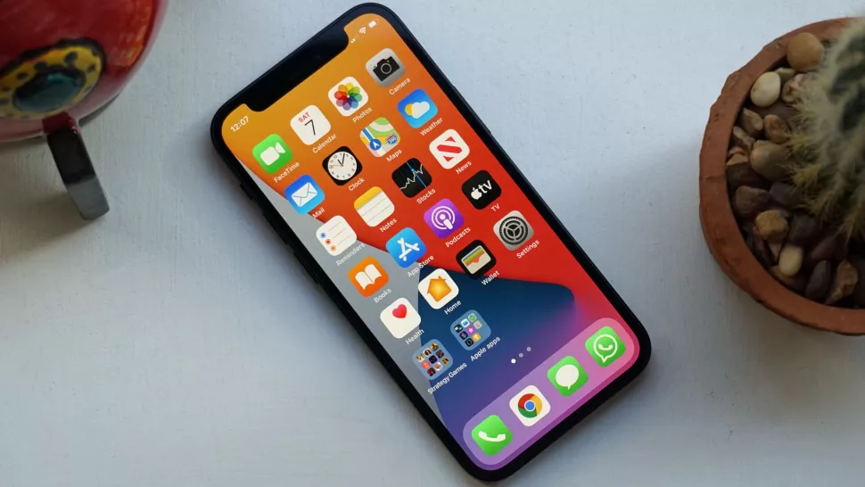
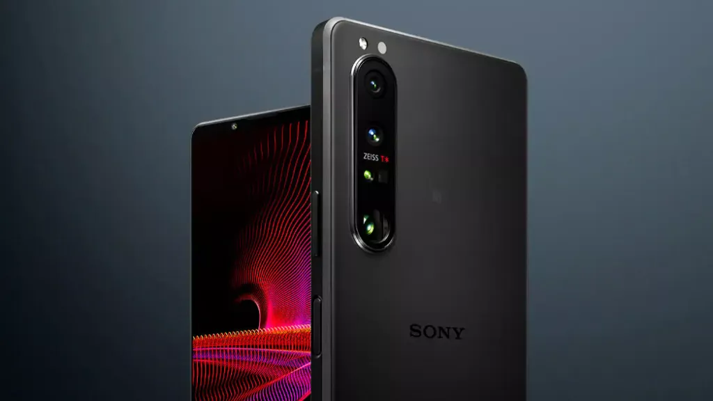
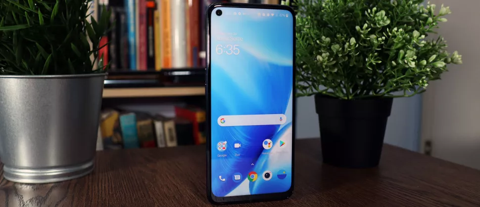

iPhone 13, Android phones, release date, price, specs, news and what you need to know

The iPhone 13 may have a similar design to the iPhone 12 mini.
The iPhone 13 is coming this year, and we're now learning lots about Apple's next iPhone thanks to leaks and rumors. Don't expect the iPhone 13 range until September 2021 at the earliest, but we're now getting a good picture of what the new handsets will bring.
We're expecting a new iPhone 13, iPhone 13 mini, iPhone 13 Pro, and an iPhone 13 Pro Max. Leaks and rumors keep rolling in, revealing everything from the likely iPhone 13 release date to the probable design, expected specs and some exciting new features.
These include things like upgraded cameras, a 120Hz refresh rate screen, 1TB of storage, brand new colors and a more powerful chipset. It's looking likely that these phones will mirror the iPhone 12's design, and there's also a chance we could see the phones launch under the iPhone 12S name instead of the iPhone 13 moniker.
Want the full picture of the iPhone 13 leaks so far? You'll find it below where we run you through each element of the upcoming phones. Expect this article to be consistently updated with all the latest iPhone 13 news ahead of the big reveal later this year.
Sony Xperia 1 III release date, price, specs, news and what you need to know

Sony Xperia 1 III .
The new Sony Xperia 1 III has been unveiled by the company during its own live stream, and it has debuted alongside the new Xperia 5 III and Xperia 10 III.The name of this handset may prove a touch confusing, but this is the company's latest flagship device and follows on from Sony's recent top Android phones the Xperia 1 and Xperia 1 II.
Sony's Xperia 1 III isn't a huge change over its predecessor, but it does bring a few new features to the fold that may interest you for your next smartphone purchase. We've put together all of the details you need to know about the next big Sony smartphone
Hands on: OnePlus Nord N200 5G review
The OnePlus Nord N200 5G is a promising budget phone

The OnePlus Nord N200 5G.
The OnePlus Nord N200 5G is a refreshed version of the more mid-range OnePlus Nord N100 that launched last year, with slightly better specs and, yes, 5G connectivity.While it’s no surprise that OnePlus would release another affordable phone to make a play for the budget market, it is strange that the brand is only aiming it at the US and Canada – surely there are other regions that would appreciate OnePlus’ newest cheap phone. Which, in itself, feels like OnePlus trying to return to the lean, affordable yet powerful configuration that made the brand popular.In our limited time with the phone, we felt its value come to the fore: a sleek, powerful phone with a great physical design that makes it feel more premium than its price would suggest. Its specs are reasonable but not awe-inspiring, with a Qualcomm Snapdragon 480 5G chipset, 4GB of RAM, and 64GB of storage.The cameras leave a lot to be desired, with a 13MP main shooter taking decent photos. The other lenses – a 2MP depth and 2MP macro camera – are less interesting, and considering other budget phones are starting to feature ultra-wide cameras, it’s disappointing to see limited variety.
Overall, the OnePlus Nord N200 5G seems to be a good budget phone with a curiously limited release plan. Doubtless users in other countries would appreciate the OnePlus polish in a more affordable phone. In any case, its low price makes it a good price for what the phone does have: specs and 5G connectivity for cheap. You can’t get much better than that.